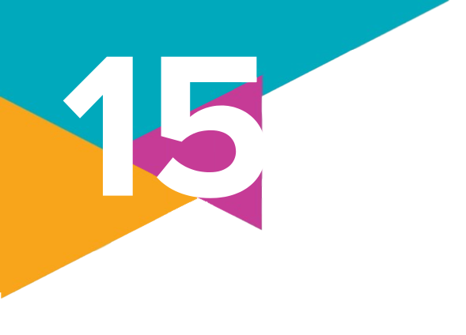
Enchentes em SP revelam falta de planejamento
urbano
Em janeiro [de 2010], o volume de chuva na cidade São Paulo (SP) foi de 480,5 milímetros.
[...]
[...] De acordo com balanço da Defesa Civil, mais de 25,7 mil pessoas em toda cidade tiveram de
deixar suas casas devido às chuvas.
Segundo [o arquiteto e urbanista Kazuo] Nakano, o modelo de urbanização e ocupação
implementado nas várzeas dos rios foi inadequado. Os rios Tietê, Pinheiros e Tamanduateí
foram transformados em canais. Isto é, perderam suas curvas acentuadas e hoje são
praticamente linhas retas. A mudança do desenho dos rios e a impermeabilização do solo dificultam
a absorção das águas.
MOCHIUTE, T. Enchentes em SP revelam falta de planejamento urbano. Portal Geledés, [s. l.], 12 fev. 2010.
Disponível em: https://www.geledes.org.br/enchentes-em-sp-revelam-falta-de-planejamento-urbano/.
Acesso em: 20 ago. 2024.
Tragédias causadas pelas chuvas ocorrem praticamente todos os anos, somente variando
em relação à intensidade das precipitações fluviais e às localidades atingidas. No Brasil,
inúmeras cidades, de norte a sul do país, capitais ou não, pertencentes às regiões
metropolitanas ou situadas no interior, sofrem com esse tipo de situação. Um dos exemplos recentes
ocorreu em maio de 2024, no estado do Rio Grande do Sul, quando um volume de chuvas sem
precedentes na região provocou enchentes e a morte de quase 200 pessoas, além de afetar
a vida de 2,34 milhões, deixando cerca de 38 mil pessoas alojadas em abrigos em pelo menos
475 municípios atingidos.
Se fizermos um levantamento da história desses tipos de desastres, vamos nos deparar com o recorde causado
pelas fortes chuvas que atingiram a Região Serrana do Rio de Janeiro, em janeiro de 2011.
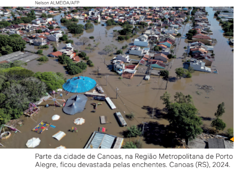
De acordo com
os dados dessa catástrofe, foram mais de 900 mortes e
quase 100 desaparecidos soterrados pelo mar de lama
que desceu das encostas dos morros e tomou os rios
das cidades de 14 municípios, entre eles Nova Friburgo,
Petrópolis e Teresópolis, arrastando tudo o que encontrava
pelo caminho. Na ocasião, 35 mil pessoas perderam
suas casas ou precisaram abandoná-las em razão
do risco de deslizamento de terras.
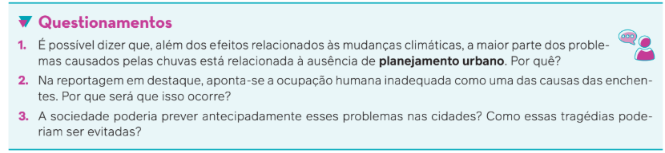
Origem e desenvolvimento das cidades e da urbanização
O termo “urbano” é derivado do latim urbe, que significa “cidade”, em oposição ao termo
“rural”. A urbanização, portanto, ocorre a partir do processo de sedentarização, ou seja, quando
as populações humanas começam a se fixar em determinado território e, em alguns casos,
passam a se dedicar à agricultura.
Nas sociedades que passaram a praticar a agricultura, o que chamamos de áreas urbanas
reuniam uma parcela bem pequena da população, já que a maior parte vivia na área rural. Nas
sociedades industriais, essa relação se inverteu, com a esmagadora maioria da população migrando
e se concentrando cada vez mais nas regiões urbanas. Esse movimento trouxe uma
série de consequências para a vida cotidiana dos seres humanos.
A arquiteta e urbanista Raquel Rolnik (1956-) apresenta um paralelo entre a construção das
cidades e o aparecimento da escrita entre os seres humanos. Segundo ela, a escrita e a cidade
são fenômenos que ocorreram quase que simultaneamente, como uma necessidade de organização
do trabalho coletivo, para a geração de determinado excedente, proporcionado pela
agricultura:
O excedente é, ao mesmo tempo, a possibilidade de existência da cidade – na medida
em que seus moradores são consumidores e não produtores agrícolas – e seu resultado –
na medida em que é a partir da cidade que a produção agrícola é impulsionada. Ali são
concebidas e administradas as grandes obras de drenagem e irrigação que incrementam
a produtividade da terra; ali se produzem as novas tecnologias do trabalho e da guerra.
Enfim, é na cidade, e através da escrita, que se registra a acumulação de riquezas, de
conhecimentos.
ROLNIK, R. O que é cidade. São Paulo: Brasiliense, 1988. p. 16.
No final de janeiro de 2010, enquanto a cidade de São Paulo sofria com as enchentes, mencionadas anteriormente, chuvas fortíssimas também atingiram o Vale Sagrado, região do Peru onde se localiza Machu Picchu. No Vale Sagrado, pontes foram destruídas e ocorreram diversos desmoronamentos nas estradas, isolando por dias os moradores e centenas de turistas. As construções seculares de Machu Picchu, no entanto, não foram afetadas em momento algum.
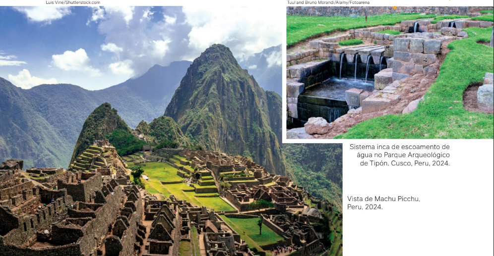
Em sítios
históricos
como Machu
Picchu e
Cusco, os incas
utilizaram uma
técnica de
urbanização
que permitia o
escoamento da
água e, conse-
quentemente,
impedia a
destruição
que fortes
tempestades
poderiam
provocar.
Quando falamos da vida nas cidades, nos referimos a uma organização populacional bem diferente daquela
característica dos grupos nômades. Nas cidades, a acumulação de riquezas e de conhecimentos significou tam-
bém a emergência de um “poder urbano”, de uma autoridade político-administrativa, relacionada à divisão social do
trabalho. Essa divisão do trabalho era encarregada, por exemplo, de gerir os excedentes e de comandar as guerras,
estabelecendo uma série de hierarquias, que se distribuem de forma diferenciada no espaço urbano. Dessa forma,
observa-se a construção de palácios suntuosos para abrigar a realeza, templos imponentes para o culto ao sagrado
e fortalezas defendidas por guerreiros.
As primeiras cidades
Segundo o filólogo e arqueólogo australiano Vere Gordon Childe (1892-1957),
o surgimento das primeiras cidades pode ser definido pelo que ficou conhecido
como Revolução Neolítica. Suas pesquisas apontaram que o início desse processo
de sedentarização teria ocorrido há cerca de dez mil anos. Apesar da identificação
tradicional da Mesopotâmia (entre os rios Eufrates e Tigre) como a região em que
teriam surgido as primeiras cidades, por volta de 3500 a.C., acompanhada, muitos
anos depois (entre 2000 e 1500 a.C.), pela ocupação humana em regiões férteis
do Egito, da China e da Palestina, novas pesquisas arqueológicas continuam sendo
realizadas, alterando datas e regiões quanto à identificação da organização da vida urbana.
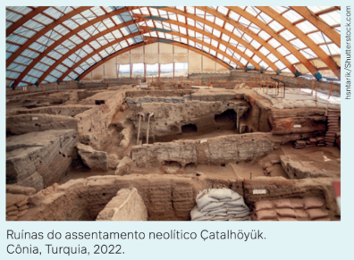
Em relação ao continente africano, reconhecido cientificamente como o berço da
humanidade, investigações mais recentes apontam para a prática da agricultura no
delta do Rio Nilo entre 6000 e 5000 a.C. Além disso, ainda há outros registros desse
processo de sedentarização na África, com algumas das suas características principais,
como agricultura, criação de gado, sistemas de escrita, metalurgia, em pequena escala,
no Deserto Ocidental; entre 12000 e 9000 a.C., na Núbia; e, por fim, em 13000 a.C.,
na localidade de Lukenya, próxima à atual Nairóbi, no Quênia.
Participar da vida na cidade
Para as pessoas, participar da vida na cidade passou a significar se submeter a regras que deveriam ser
seguidas por todos os seus habitantes. A pólis, cidade-Estado grega, por exemplo, era dividida territorialmente em duas:
a acrópole e a ágora. A primeira era o lugar do sagrado, do religioso; a segunda era o espaço público que reunia o
conjunto de “cidadãos”.
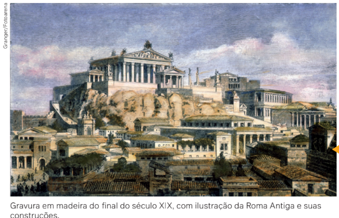
Na Antiguidade, a cidade de Roma
apresentava-se cosmopolita e
urbanizada, com casas divididas em
vários pavimentos, lojas, mercados,
restaurantes, casas de banho – um
modelo que se expandiu por seu
vasto império.
Com o mesmo sentido dado
pelos gregos, os romanos se reeriam à sua civitas, quer dizer, “a
cidade no sentido da participação
dos cidadãos na vida pública”. O
conceito de pólis ou de civitas
se referia mais à possibilidade de
participação política dos habitantes da cidade-Estado do que ao
fato de residir na área urbana.
Na Europa, durante a Idade Média, notamos diferenças substanciais em relação à cidade romana.
A terra passou a ser o centro da produção de bens e de riquezas, sob o controle dos senhores
feudais, com total autonomia em seus domínios. As cidades medievais eram constituídas por
terras comunais, nas quais os moradores se instalavam de forma irregular dentro das muralhas,
com construções sinuosas e descontínuas – sempre em torno da igreja e dos castelos dos
senhores feudais. A construção dessas cidades fortificadas era determinada pela necessidade
de defesa contra exércitos inimigos. O lugar de moradia muitas vezes coincidia com o lugar
de trabalho, sob o comando das chamadas corporações de ofício e sua produção artesanal.
A mudança que marcou o início da Era Feudal foi determinada pela total desestruturação do
Império Romano e pela perda de importância das suas cidades, a partir do processo de ocupação
iniciado por outros povos, vindos principalmente do norte da Europa.
Com o tempo, a retomada do comércio nas sociedades feudais fez surgir novas cidades no
caminho das rotas comerciais. Esse processo ocorreu não só na Europa Medieval, mas também
nas rotas comerciais asiáticas e africanas.
Nas cidades fortificadas europeias, também conhecidas como burgos, a atividade comercial
assumiu um novo papel. Aos poucos, a expansão comercial das cidades significou também sua
expansão política e territorial, com a unificação de antigos feudos em reinos centralizados,
governados por monarcas absolutistas e suas linhagens nobres e com vastas regiões que passaram
a utilizar uma mesma moeda.
Surgem os poderosos Estados modernos, cuja organização correspondeu aos interesses crescentes
da classe mercantil e manufatureira que passam a ter uma grande interferência na vida cotidiana
das pessoas. Nesse processo, o espaço urbano assume outro caráter, em que os terrenos nas cidades
passam a ser comprados e vendidos na condição de mercadorias, assim como louças, tapetes,
entre outros.
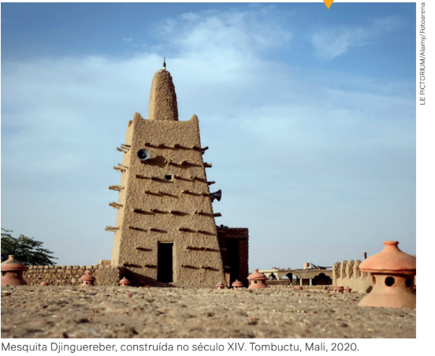
Em relação à produção, podemos observar uma divisão de classes, nas quais as
pessoas com dinheiro se tornam as proprietárias dos meios de produção e as pessoas mais pobres
passam a vender sua força de trabalho.
Daí por diante, a vida urbana não seria mais a mesma. Estava configurada uma nova organização da
cidade, que viria a se complexificar cada vez mais a partir da Revolução Industrial.
Nesse mundo
desconhecido
dos europeus,
mas existindo
praticamente
no mesmo
tempo histórico
medieval,
um exemplo
importante foi
a cidade de
Tombuctu, no
Mali. Tombuctu
servia como
entreposto do
vasto comércio
que existia no
Deserto do
Saara, unindo
o Norte e o Sul
do continente
africano.
A cidade contemporânea como espaço de segregação socioespacial
O centro da cidade, em geral, é o local em que se localiza a sede da Prefeitura e a Câmara de
Vereadores, ou seja, o espaço da política. Se for a capital de um estado, é o lugar em que pode
estar o gabinete do governador e o prédio da Assembleia Legislativa, com seus deputados.
Nos centros das cidades, é possível encontrar um posto do Instituto Nacional do Seguro Social
(INSS), delegacias de Polícia, a sede local da Receita Federal, os cartórios, entre outros.
A ordenação dos espaços urbanos está estruturada com base no seu objetivo principal. Eles podem ser de circulação pública, como o lugar em que funcionam as instituições do Estado e o comércio, ou de circulação privada, como é o caso dos inúmeros condomínios residenciais que proliferam nas médias e grandes cidades.
O ordenamento do espaço urbano iniciou-se com a produção industrial, quando a cidade passou por um processo de reorganização interna. As cidades medievais, com seu desenho irregular e descontínuo, foram substituídas por cidades planejadas, que cresceram em torno dos centros de comércio e do poder centralizado do Estado absolutista. Depois, com a Revolução Industrial, as áreas urbanas se organizaram em torno das fábricas, concentrando a população que migrou principalmente das áreas rurais.
A principal marca dessas novas cidades da “Era do Capital” é o que se denomina segregação socioespacial,
ou seja, a separação, no espaço urbano, entre as classes sociais, demarcando os locais de moradia e os locais
de serviços. Esse movimento foi ampliado a partir da expansão do trabalho assalariado.
A segregação do espaço urbano está presente na expansão crescente de reorganização das
cidades com base nos interesses do capital. Após a Segunda Guerra Mundial, em 1945, por
exemplo, o crescimento econômico dos Estados Unidos, segundo o sociólogo francês Loïc
Wacquant (1960-), não impediu a segregação forçada da população negra estadunidense em
distritos compactos e degradados dos centros das cidades.
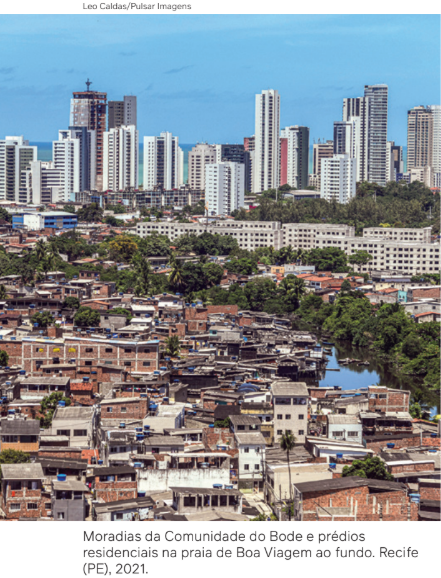
São locais conhecidos, tanto para forasteiros como para os mais
íntimos, como ‘regiões-problema’, ‘áreas proibidas’, circuito ‘selvagem’ da cidade, territórios
de privação e abandono a serem evitados e temidos, porque têm ou se crê amplamente que tenham
excesso de crime, de violência, de vício e de desintegração social.
Os locais apartados, racialmente identificados e definidos como um espaço de confinamento
e enclausuramento da população negra estadunidense, ficaram conhecidos como guetos. Mesmo
recebendo denominações distintas em outras partes do mundo – como poblacione (Chile),
villa miseria (Argentina), cantegril (Uruguai), rancho (Venezuela), banlieue (França) –,
os guetos estadunidenses, assim como as favelas brasileiras, reúnem “comunidades
estigmatizadas”, situadas na base dessas sociedades, na escala mais inferior da hierarquia
que organiza social e espacialmente as grandes metrópoles, onde residem pessoas socialmente
marginalizadas. Como descreve Wacquant:
WACQUANT, L. Os condenados da cidade: estudo sobre marginalidade
avançada. Rio de Janeiro: Revan; Fase, 2001. p. 7.
Divisões na cidade
Será que podemos afirmar que existem “muros visíveis” e “muros invisíveis” dividindo as
cidades? Como isso se dá, por exemplo, no lugar onde você mora? É possível citar alguns
exemplos de “muros visíveis”, como os shopping centers e os condomínios de luxo. Já os
“muros invisíveis” estão relacionados ao fenômeno da segregação urbana, como a divisão
que se percebe entre os bairros onde reside a classe média e alta e os bairros onde mora a
população de classes mais baixas.
Nos bairros onde reside a classe média e alta, as ruas são asfaltadas e iluminadas, o lixo é
recolhido em dia marcado, existe rede de água e de esgoto, além de haver melhor serviço de
meios de transporte. Já nos bairros periféricos, onde reside grande parte da população
trabalhadora, o poder público oferece menos serviços de infraestrutura. Muitas vezes não
existem serviços de água encanada, tratamento de esgoto e coleta de lixo, que acaba acumulado
ou descartado de maneira irregular.
Os bairros periféricos apresentam muitas ruas sem pavimentação e com transporte público
precário. Esses são alguns dos elementos do que chamamos de segregação socioespacial. Assim,
os investimentos públicos na cidade acabam por ser direcionados para as classes sociais com
maior poder aquisitivo.
As verbas públicas também são aplicadas nos bairros periféricos, mas há uma grande diferença
no nível e na necessidade dos investimentos. O Estado, dessa forma, produz uma ação de
segregação na cidade moderna.
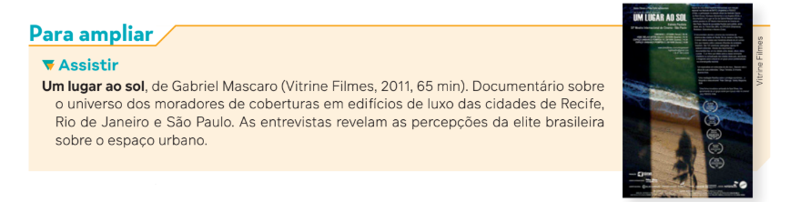
Gentrificação
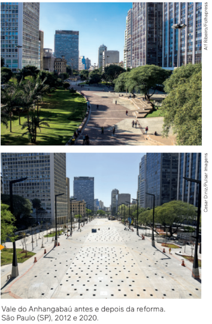
Devemos destacar nesse debate sobre a questão urbana outro conceito importante, o de
gentrificação. Gentrificação é uma tradução adaptada do termo em inglês gentrification –
derivado de gentry, que significa “pequena nobreza”. Foi formulado pela socióloga britânica
Ruth Glass (1912-1990), em 1964, para se referir às intervenções impostas pelo poder público
em bairros operários de Londres naqueles anos.
Caso as regiões onde residisse a classe trabalhadora apresentassem algum atrativo em termos
de localização, como a proximidade de centros comerciais e financeiros ou de áreas turísticas,
suas paisagens originais eram totalmente reformadas pelo poder público, provocando o interesse
de potenciais novos moradores de maior poder aquisitivo.
Dessa maneira, essas regiões passavam por processos de especulação financeira por parte do
mercado imobiliário, obrigando as antigas famílias operárias, assim como os pequenos
comerciantes do bairro, a deixarem o local e se deslocarem para bairros mais afastados,
com menos infraestrutura.
O Vale do Anhangabaú, na cidade de São Paulo (SP), é um
exemplo de uma região do centro da cidade que recebeu
grandes aportes de investimento público em uma reforma que
visou tornar a região mais atraente para investidores privados.
Após a reforma, a região foi concedida para ser explorada
comercialmente por uma administradora, que tem realizado
eventos privados no local, além do comércio de alimentos e
bebidas na região.
A análise da gentrificação ganhou força em estudos sobre a execução de políticas públicas
direcionadas a atrair o interesse de setores do capital financeiro para os espaços urbanos
centrais no século XXI. Podemos citar como exemplos globais de processos de gentrificação
as intervenções urbanas ocorridas em cidades como Madri, Barcelona e Bilbao, na Espanha;
Cidade do México, no México; Cartagena, na Colômbia; Lisboa, em Portugal; São Francisco,
nos Estados Unidos; Istambul, na Turquia; entre outras. No Brasil, destacam-se as ações no
bairro da Luz, em São Paulo; na região do Recife Antigo, em Pernambuco; a zona do Pelourinho,
em Salvador; o centro de São Luís, no Maranhão; e o Porto Maravilha, no Rio de Janeiro.
Repressão do Estado às populações nas cidades
O Estado envolve-se na produção e na reprodução da segregação nas cidades e também atua
como um gestor dos conflitos sociais. Assim, o Estado interfere na sociedade com a intenção
de punir ou reprimir aqueles que fogem à “ordem”. Esse tem sido o papel, no Brasil, das
polícias militares estaduais, assim como das guardas municipais em diversas cidades,
principalmente nas mais populosas. As favelas, por exemplo, são caracterizadas como um
“território inimigo” que, apesar de serem resultado da falta de políticas de planejamento
urbano para uma parcela da população, são entendidas como territórios que precisam ser
“eliminados”.
Além da população residente nas favelas e comunidades periféricas em geral, chama a atenção
nas grandes cidades e regiões metropolitanas a quantidade crescente de famílias inteiras sem
moradia, vivendo em situação de rua, com assistência insuficiente por parte do poder público.
Essa população também pode ser entendida como mais uma “inimiga” dos interesses do mercado
imobiliário.
Diferentemente da ocupação dos espaços apartados, confinados e sem infraestrutura
representados pelas favelas, a população que vive em situação de rua ocupa calçadas e praças,
principalmente nos bairros centrais das cidades, em meio ao movimento geral das lojas, dos
bancos e de museus, na frente dos grandes shoppings centers, entre outros locais movimentados.
Na tentativa de exercer autoridade sobre os territórios ocupados pelas favelas e sobre a
população em situação de rua, entendidos como um “problema”, muitos governos recorrem à
intervenção armada. É comum a realização de operações da Polícia Militar sob a justificativa
de combater as organizações ligadas ao tráfico de drogas nas favelas, bem como as ações
violentas das guardas municipais, expulsando a população em situação de rua que “incomoda”
o livre fluxo dos consumidores nas áreas centrais das cidades.
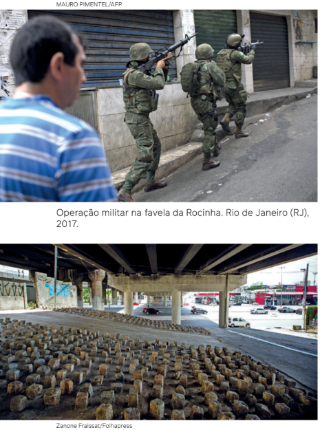
Em relação a esse cenário cada vez mais comum nas cidades, chamam a atenção as políticas de
repressão impostas por diversas prefeituras; por exemplo, a prática de utilizar jatos de água
nas calçadas durante a madrugada, impedindo que sejam utilizadas pela população em situação
de rua, ou instalando paralelepípedos de concreto debaixo de viadutos, evitando que sejam
utilizados como abrigo por essas famílias.
No início de 2021, na cidade de São Paulo (SP), a prática de instalação de paralelepípedos
foi denunciada pelo padre Júlio Lancellotti (1948-), coordenador da Pastoral do Povo de Rua
da Arquidiocese de São Paulo. Com a repercussão negativa dessa prática, a prefeitura apontou
que a instalação dos blocos teria ocorrido como uma ação isolada de um funcionário, que
teria sido imediatamente exonerado.
Paralelepípedos instalados sob viaduto
para evitar abrigo de pessoas em situação
de rua. São Paulo (SP), 2021.
Movimentos sociais na luta por moradia
Movimentos sociais na luta por moradia Diante da situação da população urbana sobrevivendo
em moradias precárias e ameaçadas cotidianamente por ordens de despejo, em 1997 organiza-se
um movimento social urbano chamado Movimento dos Trabalhadores Sem-Teto (MTST). Entre seus
objetivos centrais está a luta pela garantia do direito constitucional à moradia digna para todos.
Em 2024, o MTST estava presente em 14 estados brasileiros, alcançando grande visibilidade.
O movimento também desenvolve projetos de formação política e de organização de cozinhas
solidárias, a fim de garantir alimentação completa, balanceada, diária e gratuita para famílias
periféricas.
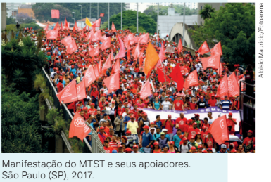
Outro movimento urbano que também ganhou destaque nas últimas décadas foi o Movimento Nacional
de Luta por Moradia (MNLM), surgido em 1990, com o intuito de organizar ocupações, principalmente
de prédios abandonados, públicos ou privados. Igualmente com representação em 14 estados do país,
o MNLM trata-se de um movimento de resistência que procura se fortalecer para o enfrentamento das
políticas de remoção da classe trabalhadora das áreas centrais da cidade.
Segregação socioespacial e étnico-racial
As favelas e as ocupações nas cidades podem ser compreendidas como zonas apartadas dos
interesses mais globalizados e rentáveis do capital, que prejudicam os interesses do mercado
imobiliário. Como vimos, a segregação socioespacial é parte integrante da divisão da sociedade
capitalista em classes sociais. Trata-se também de uma segregação étnico-racial, pois a maioria
das favelas e ocupações é habitada por uma população majoritariamente negra.
Esses tipos de segregação também ocorrem em outros países, como nos bairros pobres da África
do Sul pós-apartheid, nos bairros onde mora a classe trabalhadora de origem latina nas cidades
estadunidenses ou nos bairros periféricos existentes em países europeus, onde residem imigrantes
que vieram da Turquia, da Argélia, da Jamaica e de outros países asiáticos, africanos e americanos.
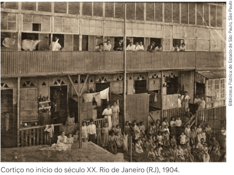
No Brasil, a segregação socioespacial e étnico-racial nos remete historicamente à escravidão.
A abolição da escravidão e o advento da República não alteraram o quadro de segregação existente
na sociedade. A população que habitava as senzalas e os quilombos na área rural migrou para as
cidades e foi ocupar regiões mais afastadas ou abandonadas dos centros urbanos, acompanhando a
crescente desigualdade social que marca a história do capitalismo em nosso país.
Mas o que são mesmo as favelas?
A representação dos espaços urbanos que receberam o nome de favela no Brasil é marcada por negatividade e preconceitos, que ignoram a pluralidade existente nesses locais. Segundo os professores Jaílson de Souza e Silva e Jorge Luiz Barbosa, a favela, nessa perspectiva, seria sempre representada pela “noção de ausência”: um espaço supostamente sem ordem, sem lei, sem moral, sem infraestrutura urbana, entre outros elementos.Entre diferentes versões sobre o surgimento das favelas, a mais difundida aponta que a primeira favela brasileira teve origem na cidade do Rio de Janeiro, no Morro da Providência, ocupado no final do século XIX pela população negra que teria servido na Guerra de Canudos, em 1897. O termo “favela” seria utilizado para se referir ao morro em que esse grupo morava no Rio, que teria características parecidas com determinado lugar do sertão baiano, cujos moradores eram conhecidos como favela.
Desigualdade à mesa
Uma das dimensões da desigualdade urbana é a dificuldade de acesso a alimentos in natura, ou seja, alimentos
frescos obtidos diretamente da natureza e que não sofreram alterações. Diversas pesquisas relacionam o consumo
alimentar ao local de residência. Isso significa que bairros com maior nível socioeconômico apresentam uma oferta
maior de alimentos nutritivos. Por sua vez, em bairros periféricos, com menor nível socioeconômico, há uma concentração maior de pequenos comércios cuja oferta de alimentos processados e ultraprocessados é maior que a
de alimentos in natura. Os habitantes desses bairros são obrigados a se deslocar para regiões centrais ou regiões
com maior poder aquisitivo para ampliarem seu acesso a estabelecimentos que ofereçam opções de alimentos
saudáveis, como feiras livres, sacolões, peixarias e supermercados.
São chamados de desertos alimentares os locais em que há pouca
oferta de alimentos saudáveis, nutritivos e com custo mais baixo.
Em 2018, a Câmara Interministerial de Segurança Alimentar e Nutricional do Ministério do Desenvolvimento
Social realizou um estudo técnico sobre o tema, resultando no Mapeamento dos desertos alimentares no Brasil.
Esse estudo identificou que em 12 das 21 capitais brasileiras pesquisadas os subdistritos com
menor quantidade de estabelecimentos que oferecem alimentos saudáveis também são os de
menor renda.
O estudo mostrou ainda que, à medida que o porte dos municípios brasileiros cresce, aumenta
o número de estabelecimentos que vendem alimentos processados ou ultraprocessados por
habitante, ao mesmo tempo que diminui a densidade de estabelecimentos de venda de alimentos
in natura e mistos, ou seja, estabelecimentos onde não predomina a oferta de alimentos saudáveis
e também não predomina a oferta de alimentos não saudáveis.
Outra pesquisa importante sobre as desigualdades de acesso da população brasileira a alimentos
saudáveis foi realizada por Ana Clara Duran, doutora em Ciências e pesquisadora em nutrição e
saúde pública. A pesquisa corrobora o estudo mencionado ao apontar que o consumo das pessoas
está atrelado à oferta de alimentos encontrados nas proximidades de suas residências, sejam frutas
e verduras, sejam alimentos processados ou ultraprocessados. Para diferenciar cada tipo de alimento, podemos nos basear nas definições a seguir.
In natura: alimentos frescos, obtidos diretamente da natureza, sem alterações.
[...]
Processados: produtos fabricados a partir do alimento natural, mas com a adição de sal ou açúcar.
Ultraprocessados:
produtos transformados pela indústria, com pouco ingrediente natural e adição de vários
ingredientes industriais e aditivos.
DESERTOS alimentares. In: ALIMENTANDO POLÍTICAS. São Paulo: IDEC, 2019. Disponível em:
https://alimentandopoliticas.org.br/wp-content/uploads/2019/03/Desertos-Alimentares.pdf. Acesso em: 1 ago. 2024.
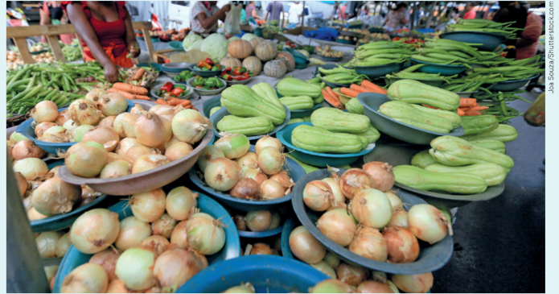
Feira livre com
alimentos in natura.
Feira de Santana
(BA), 2023.
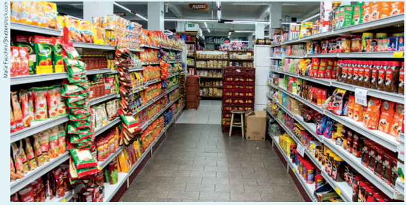
Seção de alimentos
processados e
ultraprocessados
em supermercado.
Carlos Barbosa (RS),
2019.
Considerando essas informações, propomos a realização de uma pesquisa quantitativa do consumo
de alimentos in natura e processados/ultraprocessados entre as pessoas do seu bairro. Para isso,
vamos entender melhor o que é esse tipo de pesquisa.
Para comparar e analisar as informações coletadas na amostra, as pesquisas quantitativas utilizam
instrumentos padronizados de coleta de dados, como os questionários, buscando investigar um problema
social específico.
Nesta proposta, o problema de pesquisa, portanto, será o consumo de alimentos in natura e de
processados/ultraprocessados entre moradores do bairro onde você reside ou estuda. Para realizar a
pesquisa quantitativa sobre esse tema, considere os passos a seguir:
1. Em primeiro lugar, reflita sobre o tema e busque mais informações sobre seu bairro. Ande por ele
e observe os tipos de estabelecimentos comerciais existentes. Anote no caderno suas primeiras impressões.
2. Na sequência, formule hipóteses com base no que observou e pesquisou. Registre-as e lembre-se
de que as hipóteses devem ser testadas; elas não precisam necessariamente se confirmar. Com base
em sua observação, você acredita que as pessoas no seu bairro consomem mais alimentos in natura,
processados ou ultraprocessados? Por quê? As suas respostas para essas questões serão suas hipóteses.
3. Elabore um questionário que será sua ferramenta de coleta e mensuração de dados para a análise do
consumo de alimentos no seu bairro, bem como para checar suas hipóteses. Nessa etapa, procure elaborar
perguntas objetivas que abordem, por exemplo:
a) a frequência (diária, semanal ou mensal) de consumo de alimentos in natura, processados ou
ultraprocessados;
b) as razões para as escolhas alimentares (sejam alimentos saudáveis, sejam mais processados);
c) quais tipos de alimentos in natura (frutas, verduras, legumes), processados (alimentos em conserva,
pães, queijos) e ultraprocessados (embutidos, biscoitos, salgadinhos, alimentos prontos como pizzas,
hambúrgueres) são consumidos;
d) o perfil demográfico da pessoa entrevistada (sexo, idade, escolaridade, profissão, ocupação, nível
de renda familiar e estado civil).
4. Após a coleta, é importante organizar e classificar os dados obtidos para analisar os resultados. Por
exemplo, você precisará analisar as razões que os entrevistados elencaram para consumir alimentos in
natura, processados ou ultraprocessados e classificar essas respostas: questão de saúde, dificuldade de
acesso, valor dos alimentos, entre outras. Para fazer a organização dos dados, você poderá criar
tabelas manuscritas ou no computador.
5. Em seguida, você fará uma síntese dos resultados obtidos, descrevendo quantas pessoas foram
entrevistadas e a recorrência de respostas para cada pergunta.
6. Por fim, você poderá comparar os resultados obtidos com as hipóteses anteriormente formuladas.
Crescimento urbano acelerado
Desde a Revolução Industrial, o movimento de urbanização da população mundial cresce de forma cada vez
mais acelerada. Pesquisas populacionais desenvolvidas para o Programa das Nações Unidas para os Assentamentos
Humanos (ONU-Habitat) identificaram que, em 2022, 55% da população mundial vivia em cidades. O Relatório
mundial das cidades 2022, publicado pelo ONU-Habitat, aponta uma projeção na qual 68% de população mundial
será urbana até 2050.
O urbanista estadunidense Mike Davis (1946-2022) reuniu uma série de dados sobre o crescimento populacional
urbano no livro Planeta favela (2006). De acordo com a análise desses dados, as cidades seriam responsáveis
pelo crescimento de quase toda a população mundial, que totalizava 8 bilhões de habitantes em 2022. Projeta-se
que as cidades poderiam atingir 10 bilhões de habitantes em 2050.
Segundo os dados avaliados por Davis, entre as 24 cidades mais populosas do planeta em 2004, apenas Nova
York não estava localizada nos países mais pobres e “em desenvolvimento”, aparecendo em terceiro lugar, com
21,9 milhões de habitantes. Em primeiro e segundo lugares da lista, apareciam a Cidade do México (22,1 milhões)
e Seul (21,9), respectivamente. Após a terceira posição de Nova York, seguiam São Paulo (19,9 milhões), Mumbai
(19,1), Délhi (18,6) e Jacarta (16), entre outras. Bogotá aparecia na última posição, sendo uma megacidade com
8 milhões de habitantes em 2004. Já o Rio de Janeiro, a segunda megacidade brasileira na lista, ocupava a 16a
posição, com 11,9 milhões de habitantes, à frente de Teerã, Istambul e Pequim, que a seguiam de perto nessa
“corrida”.
Aponta-se que o crescimento da população urbana, que se acentua em países mais pobres e em desenvolvimento,
se dará principalmente em favelas. Dados preliminares do Censo Demográfico de 2022 do IBGE apontaram para a
existência de 11 403 favelas no Brasil, com cerca de 16 milhões de pessoas, que residem em 6,55 milhões de unidades
habitacionais.
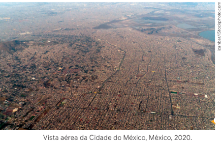
No entanto, de acordo com o relatório do ONU-Habitat de 2022, estimava-se a população favelada
brasileira em mais de 26 milhões de pessoas, segundo dados de 2016, representando 14,9% do total da população.
Esse percentual, no entanto, significava um número relativamente modesto, se comparado com outros países.
Observe o gráfico com dados de diferentes países.
A Cidade do México, capital do país, é um exemplo de cidade com
grande população urbana situada em um país em desenvolvimento.
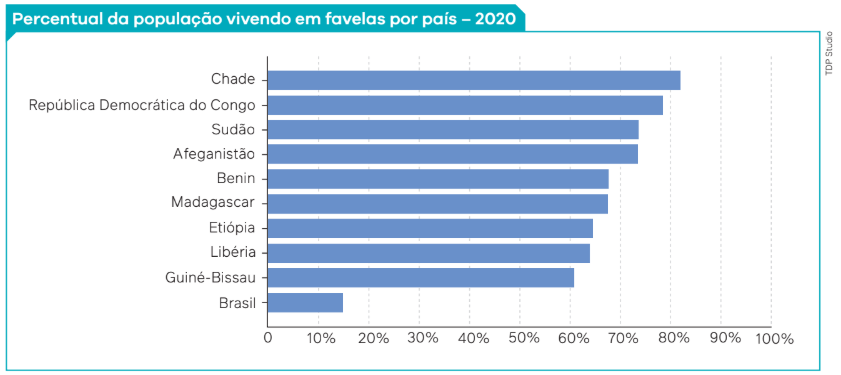
Fonte: ONU. World Cities Report 2022. Nova York: ONU, 2022. p. 348-349.
Disponível em: https://unhabitat.org/sites/default/files/2022/06/wcr_2022.pdf. Acesso em: 1 ago. 2024.
Esses dados nos permitem uma reflexão sobre as condições de vida de grande parte da população que vive em
áreas urbanas. A situação agrava-se quando levamos em conta os baixos padrões de qualidade de vida, segurança
sanitária e social desses grupos sociais.
As cidades dos grandes eventos
Outro aspecto importante para pensarmos as cidades com base na Sociologia são os megaeventos
esportivos, como a Copa do Mundo de Futebol e os Jogos Olímpicos. Em 2027, o Brasil será sede da
Copa do Mundo de futebol feminino, mas essa não será a primeira vez que o país receberá grandes
eventos esportivos. Em 2014, o Rio de Janeiro foi uma das cidades que recebeu a Copa do Mundo,
além de ter sido sede dos Jogos Olímpicos de 2016.
A escolha de uma cidade como sede de megaeventos esportivos implica vários compromissos assumidos
pelo governo, como melhoria da infraestrutura urbana; ampliação de ruas e avenidas para circulação de
pessoas e equipes esportivas; construção de estádios que possam abrigar os eventos; mudança de
algumas leis municipais e federais; ampliação da estrutura hoteleira, de restaurantes e de segurança;
entre outros.
Esses compromissos, em tese, deveriam melhorar a vida das populações das cidades; no entanto, isso
nem sempre ocorre para todos os moradores e classes sociais. Durante a Copa do Mundo de 2010, na
África do Sul, por exemplo, mais de 10 mil pessoas que moravam em favelas e nas ruas da Cidade do
Cabo foram removidas à força para cubículos minúsculos feitos de lata e cobertos por lonas, que
passaram a ser conhecidos como “Cidade de Lata”.
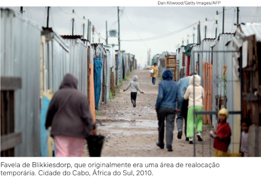
De acordo com o pesquisador e professor Carlos Bernardo Vainer, especialista em estudos urbanos, os
megaeventos esportivos são um grande negócio capitalista que significa somente a ponta de um iceberg
da ideia de cidade-empresa. Desse modo, durante os megaeventos, se estabelece o que esse
pesquisador chama de “cidade de exceção”.
No Brasil, durante a preparação para a Copa do Mundo de Futebol e as Olimpíadas também ocorreram
remoções de moradores de diversas regiões. De acordo com a legislação, a realocação dos despejados
durante as construções deveria ocorrer em um raio de dois quilômetros, mas essa regra não foi cumprida
em todas as cidades-sede dos jogos de futebol.
A concepção de cidade-empresa significa transformações urbanas duradouras no acesso da população a certas áreas, no comércio de mercadorias e no acesso a locais de moradias. Mas, além dessas intervenções, elas representam uma grande mudança no perfil da cidade, com a realocação de parte de seus moradores, remanejados das áreas que são objeto da especulação imobiliária e por onde circularão os turistas.
Para a realização de megaeventos esportivos, em vez de ações políticas localizadas, a cidade inteira vira um lugar para fins específicos empresariais. Implementam-se novas regras urbanas e novas legislações de isenções fiscais, com remoções de pessoas que estão há décadas morando no lugar. Dessa forma, podemos concluir que megaeventos, como Copa do Mundo e Olimpíadas, não envolvem somente esportes, mas negócios também.
Não são simples eventos que acabam, após terem ocorrido em um determinado período. Com tantos interesses envolvidos, deixam marcas quase definitivas nas suas cidades-sede.
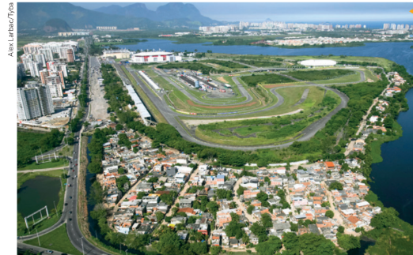
Vista aérea da Vila Autódromo.
Rio de Janeiro (RJ), 2010.
As moradias da antiga favela Vila Autódromo
ficavam no entorno do Autódromo de
Jacarepaguá, nome mais conhecido do
Autódromo Internacional Nelson Piquet.
Para a construção de um parque olímpico
em razão das Olimpíadas de 2016, tanto
o autódromo quanto as moradias foram
demolidos, e as famílias removidas para
outros locais.
Como serão as cidades do futuro?
As cidades estão em constante transformação. Com os diversos avanços tecnológicos
desenvolvidos pela sociedade da informação, é possível, por exemplo, que a cidade do futuro se
torne um local descentralizado, já que o espaço e o tempo seriam redefinidos pela nova ordem
gerada e gerida pelo capital financeiro.
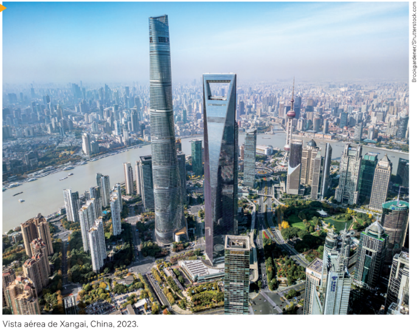
A cidade chinesa
de Xangai é
conhecida como
um dos centros
urbanos mais
modernos e
tecnológicos da
atualidade, além
de um importante
núcleo financeiro
mundial.
No entanto, especulações sobre o futuro da cidade não precisam estar atreladas ao “caos” ou a um “lugar
do sofrimento”, mas, sim, a importantes espaços de luta, em uma construção permanente por melhor
qualidade de vida. Desse modo, projetos governamentais poderiam aprovar políticas que:
• reduzissem as desigualdades e melhorassem as condições (materiais e imateriais) de vida das classes
trabalhadoras, com melhor transferência de recursos para os bairros onde residem essas populações;
• contribuíssem para a organização dos trabalhadores e das lutas populares;
• enfraquecessem os grupos de poder dominantes, com o combate às políticas de clientelismo, à
privatização dos recursos públicos e às práticas de corrupção, entre outras ações.
Essas e outras questões estiveram presentes, por exemplo, nos debates que ocorreram na cidade do Rio
de Janeiro, entre 22 e 26 de março de 2010, por ocasião da realização de dois eventos: o Fórum Urbano
Mundial e o Fórum Social Urbano. Enquanto o primeiro foi organizado pelo ONU-Habitat, o segundo foi
organizado por movimentos sociais e centros de estudos universitários voltados para a questão urbana
no século XXI sob o ponto de vista dos trabalhadores.
O tema central do evento da ONU foi “O direito à vida: unindo o urbano dividido”. Avaliando o problema
urbano do Rio de Janeiro, a tanzaniana Anna Tibaijuka, na época a diretora-executiva do ONU-Habitat,
defendeu o desenvolvimento da cidade com base no investimento dos governos em saneamento básico.
Segundo Tibaijuka, se os investimentos em saneamento se elevassem em um quarto nas moradias das
favelas, os locais não teriam mais esse status e, assim, poderiam também ser geradas muitas
oportunidades de emprego.
Por sua vez, o Fórum Social Urbano apresentou uma pauta diferente, tendo como
preocupações principais a troca de experiências de organizações e lideranças comunitárias de todo
o mundo; a denúncia sobre as iniciativas de “criminalização dos movimentos sociais” por parte
dos diversos governos; a necessidade de se buscar a justiça ambiental; entre outros temas.
As questões debatidas no Fórum Social Urbano continuam em pauta e se tornam
cada vez mais urgentes, diante dos inúmeros desafios sociais, políticos, econômicos e ambientais que
pressionam cada vez mais as cidades.
A resposta que vem sendo dada pelas Nações Unidas, por meio do programa ONU-Habitat, aponta para
a criação de cidades e comunidades sustentáveis, que representa o Objetivo de Desenvolvimento
Sustentável (ODS) de número 11, divulgado em 2015. Segundo a ONU, para que as sete metas previstas
pelo ODS 11 sejam concretizadas até 2030, são necessários a garantia de acesso à habitação segura e
a urbanização das favelas; a expansão dos serviços de transportes públicos, com atenção às pessoas em
situação de vulnerabilidade e com mobilidade reduzida; o aprimoramento de mecanismos de
planejamento, de controle social e de gestão participativa; a proteção ao patrimônio natural e cultural;
e o estabelecimento de mecanismos de defesa dos pobres e demais pessoas vulneráveis a crises
econômicas e catástrofes ambientais – nesse item, propõe-se também a implementação de políticas de
planejamento urbano que reduzam os riscos dos desastres extremos provocados pelas mudanças
climáticas.
Praticamente na mesma época em que a ONU publicava seus ODS, no Brasil o Fórum Nacional de
Reforma Urbana (FNRU) trazia à público, em 2016, a cartilha Reforma urbana já! O FNRU é uma
organização que reúne institutos de pesquisa universitários, organizações não governamentais,
entidades profissionais e estudantis e movimentos populares urbanos. O Fórum tem origem no
Movimento Nacional pela Reforma Urbana, organizado em 1987, por ocasião da mobilização social que
marcou a elaboração da Constituição Federal de 1988. Na sequência desse processo, iniciado em 1987,
o FNRU conseguiu aprovar em 2001, após grande pressão popular, o statuto da Cidade (Lei no
10.257/2001).
O Estatuto da Cidade regulamenta nacionalmente a política urbana a ser desenvolvida
no país, com foco em:
• promoção de políticas de inclusão, prevendo uma reforma urbana que tenha um ca-
ráter distributivo, priorizando a melhoria das condições de vida das populações mais
pobres e excluídas;
• criação de instâncias públicas e efetivas de participação e controle social;
• compromisso do Estado em garantir a função social da propriedade, isto é, garantir
que o acesso e o uso de propriedades tenham interesse coletivo, que satisfaçam às
necessidades da população em sua totalidade, e não somente de minorias privilegia-
das economicamente.
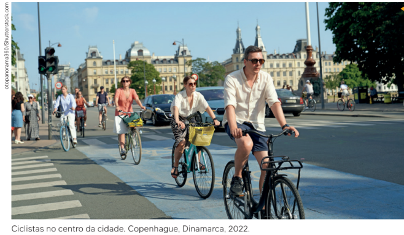
nbsp;
Copenhague, capital
da Dinamarca, é uma
referência de cidade
sustentável. Uma de
suas características
é o investimento em
meios de transporte
mais sustentáveis,
como as bicicletas. Há
diversas ciclovias pela
cidade, seguras e
bem sinalizadas, além
de estacionamentos
específicos,
incentivando a
população a utilizar
a bicicleta para se
locomover.